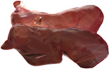

Печень - вид субпродукта имеющего свои особенности, и ценные биологические свойства. Печень относится к деликатесно - лечебным продуктам. Структура ткани, специфические вкусовые качества, легкость отделения питательного вещества от стромы делают этот продукт незаменимой основой для приготовления паштетов и ливерных колбас.Белка в печени содержится столько же, сколько в говядине, однако в качественном отношении этот белок значительно отличается. Главная особенность печени — наличие в ее составе белков железопротеидов. Основной железопротеид печени ферритин содержит более 20% железа. Он играет важную роль в образовании гемоглобина и других пигментов крови.
В печени много воды, поэтому она быстро портится. Перед готовкой ее надо внимательно осматривать, все вызывающее недоверие нещадно уничтожать. Печень получится особенно нежной, если перед приготовлением ее подержать некоторое время в молоке. Лишние две-три минуты обжарки говяжьей печени портят вкус и делают ее жесткой и сухой.
Перед тепловой обработкой печень необходимо освободить от желчных протоков и пленки и тщательно промыть. Для свиной печени характерен слабый привкус горечи.
Полезные свойства печениВ печени содержится 70-73% воды, 2-4% жира, 17-18% белков, в том числе все незаменимые аминокислоты. Печень очень богата витаминами группы В, а так же в не присутствуют витамин A, D, Е , K. Печень содержит такие макро и микроэлементы как железо, фосфор, калий, натрий, кальций, магний, медь.
Уже в глубокой древности люди имели понятие о целебных свойствах печени: в Египте из печени готовили очень много блюд, а великий Авиценна ещё в XI веке в своём известном медицинском трактате предписывал давать больным с ослабленным зрением сок козьей печени, хотя о витамине А тогда ещё не знали.
Печень содержит много полноценных белков, в состав которых входят такие важные элементы, как железо и медь, причём в легкоусвояемой форме. Железо необходимо нашему организму для нормального синтеза гемоглобина, а медь давно известна своими противовоспалительными свойствами. Кроме этих элементов, печень содержит кальций, магний, натрий, фосфор, цинк; витамины А и С, витамины группы В; аминокислоты: триптофан, лизин, метионин. Особенно богата печень витамином А, который необходим для здоровья почек, работы мозга, нормального зрения, а также для гладкой кожи, густых волос и крепких зубов.
Правильно приготовленное из свежей печени блюдо может обеспечить нашему организму полную дневную норму многих витаминов и минералов, поэтому печень так полезна маленьким детям, беременным женщинам и людям, склонным к атеросклерозу и диабету.
В печени также вырабатывается особое вещество – гепарин, используемое в медицине для того, чтобы нормализовать у пациентов свёртываемость крови. Так что печень полезна и для профилактики такого опасного заболевания, как тромбоз.
Пожалуй, самой полезной из доступных нам продуктов диетологи считают печень рыб, а именно – трески и минтая. В печени трески много не только витамина А, но и витамина D, который необходим для образования здоровой костной ткани. Если женщина во время беременности будет регулярно употреблять печень трески, то ребёнок родится более крепким, с сильной иммунной системой.
Специалисты рекомендуют употреблять печень больным сердечно-сосудистыми и нервными заболеваниями, при проблемах с суставами, а также для уменьшения количества холестерина в организме. Она очень полезна детям, страдающим малокровием. Свиная и говяжья печень полезна курильщикам. Печень содержит хром, помогающий при атеросклерозе, диабете.
Никогда не покупайте печень, которая имеет бугристые или светлые уплотнения, пятна - это признак серьезных заболеваний у животных.